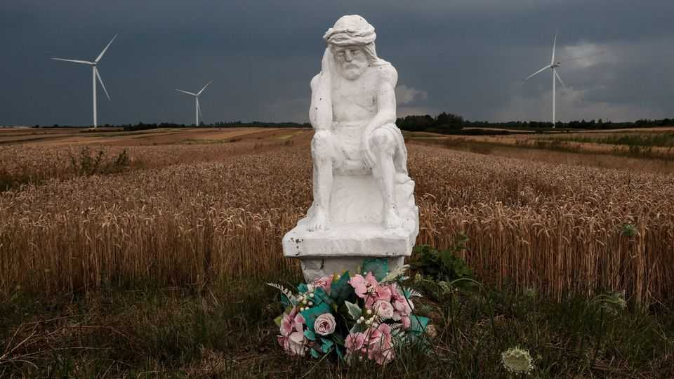
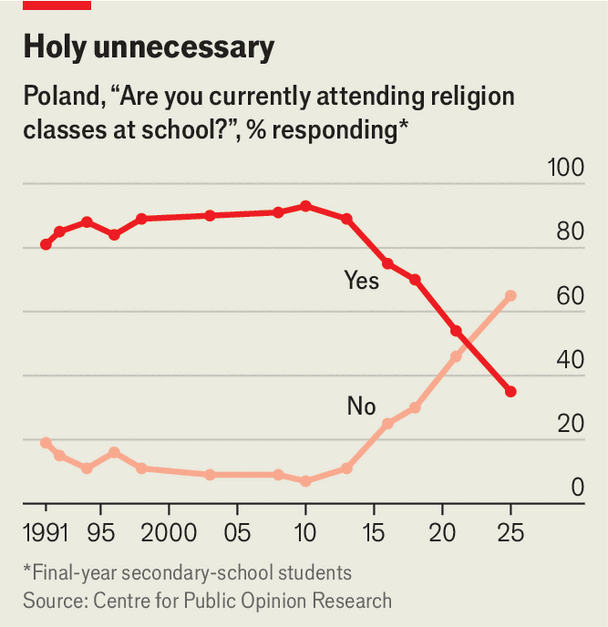

Poland is growing less religious, but not less right-wing
As belief in Catholicism declines, secular far-right parties are rising

Oct 29th 2026
For most of the day, Gabriela’s classroom in Wroclaw, a city in south-western Poland, is a hive of activity. But on Thursdays, as religion class starts, most of the kids trickle away. Religion lessons are optional and limited to one hour a week, but even that is sometimes too much for 12-year-old Gabriela, who says she envies the kids who get to opt out. Of the 18 pupils in her class, only three take religion.
Poland is one of Europe’s most religious countries, with 92% of adults identifying as Catholic. But religiosity is declining. The share of adults who do not practise at all has doubled in under a decade, to 22%. Sunday Mass attendance has fallen from 45% in 2005 to below 30%. Church weddings, baptisms and priest numbers have dropped, and the church has been forced to look abroad for recruits. At a seminary in Kielce, in southern Poland, nearly a third of the trainee priests are from Africa.

The exodus is especially acute among the young. From the 1990s, when Poland scrapped communism, until the early 2010s the share of secondary-schoolers in their final year who took religion courses hovered around 90%. By last year it had dipped to 35% (see chart). The share who are non-believers is 24%, four times the figure for adults. Youngsters everywhere tend to be less religious than their parents, but in Poland the generation gap is unusually wide. “Secularisation here is happening faster than anywhere else,” says Andrzej Kobylinski, an academic and priest.
One factor is economic growth, which tends to boost secularism. Poland’s record on that front is extraordinary: GDP per head, adjusted for purchasing power, has quadrupled in two decades, propelling the country to about the same real income level as Spain. Meanwhile, a rash of clerical sexual-abuse scandals in the late 2010s tarnished the church’s reputation.
Another element was an informal alliance between church leaders and the right-wing populist Law and Justice (PiS) party, which governed from 2015-23. That alienated many youngsters, and women of all ages: hundreds of thousands protested in 2020 after the constitutional court, dominated by PiS appointees, imposed an almost total ban on abortion. Covid left a mark, too. Attendance at mass plummeted during the lockdowns, and has not recovered. Support for abortion and same-sex marriage has risen in the past decade.
But a more liberal society has not always made for liberal policies. Donald Tusk, the prime minister, heads a government spanning centrists, progressives, leftists and conservatives. During his campaign in 2023 he pledged to ease the abortion ban, but splits in his coalition have prevented that. A ruling by the European Union’s top court has forced Poland to accept gay marriages conducted abroad, but the country’s own laws have no provision even for same-sex civil unions. In July the president, a PiS ally, vetoed legislation that would have granted some rights to same-sex partners.
Rather than weakening the conservative opposition, secularisation is reshaping it. The Konfederacja (KWiN) party is challenging PiS as Poland’s main opposition. Although many of its politicians are Catholic hardliners, KWiN’s agenda pays little attention to the church. It focuses mainly on Euroscepticism, manosphere vibes, low taxes and stopping migration.
“Secularisation is not a threat to the right,” says Krzysztof Bosak, KWiN’s co-leader. Religion takes up “a very small fraction of our overall political message”. That may explain the party’s appeal among the young and religiously indifferent. Polls suggest it enjoys more support from the young than any other party.
Meanwhile PiS has seen its support fall to under 20%. In hopes of winning back voters from KWiN and the Confederation of the Polish Crown, an even more extreme (and often antisemitic) far-right group, PiS this year picked a nationalist Catholic as its candidate for prime minister. But that alienated the party’s moderates. In July a group of 40 MPs headed by Mateusz Morawiecki, a former prime minister, left PiS to form a new centre-right grouping, Development Plus.
In the past, says Aleks Szczerbiak of the University of Sussex, the conservative recipe for success in Poland was to be “left-wing on economic issues, right-wing on moral and cultural issues, and very religious”. That formula has expired, he says. Now the right’s binding force is no longer faith but fear—whether of immigrants, woke culture or the EU. Mr Kobylinski says this mirrors developments elsewhere in Europe, pointing to the secular, populist-right Alternative for Germany.
The good news for Mr Tusk is that with less than a year before a general election, his ruling Civic Coalition (KO) is in first place in the polls. The bad news for him is that KO and its allies lack the votes to form a government. For now, PiS and the far right together have a big enough share to form a majority. The right is deeply divided; in the last campaign KWiN vowed never to rule with PiS. But should they overcome their differences and take office, it would be as a more secular yet more extreme right-wing force than ever.■